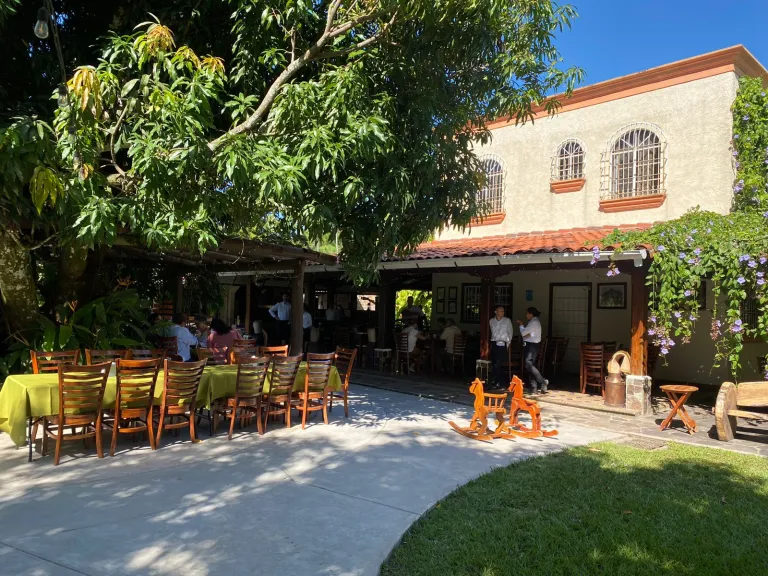

Los Lechones de Lucía
Acerca de nosotros
Bienvenidos a nuestra Finca "Los Lechones de Lucía", un lugar mágico ubicado en el corazon de Cuscatlán, El Salvador.
Te invitamos a disfrutar de la gastronomía en un entorno natural y relajante...
un espacio para conectar con la naturaleza, mientras compartes con tus amigos y seres queridos
